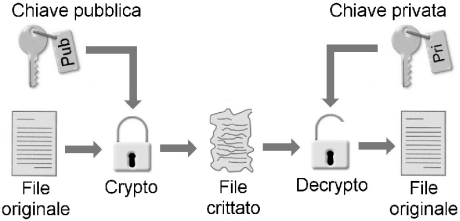

Informatica
Crittografia

Per garantire la riservatezza di un documento informatico, che viene trasmesso in internet, è necessario criptarlo tramite un processo di codifica ed uno di decodifica.
Per codificare un messaggio viene utilizzato un algoritmo a chiave pubblica, per decodificarlo occorre invece un algoritmo a chiave privata.